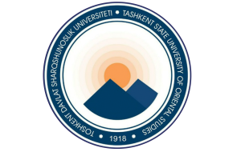

Tarjimashunoslik, tilshunoslik va xalqaro jurnalistika oliy maktabi
ISHONCH TELEFONI
+998 71 233 34 24



+998 71 233 34 24
Tashkil topishi va rivojlanish bosqichlari
Tarjimashunoslik, tilshunoslik va xalqaro jurnalistika oliy maktabi 2024-yilda Toshkent davlat sharqshunoslik universiteti tarkibida tashkil etilgan. Oliy maktab sharq tillari bo'yicha tarjimon, tilshunos va jurnalist mutaxassislar tayyorlashga ixtisoslashgan.
2024-2025 yillar: Oliy maktabning tashkil topishi va dastlabki faoliyati.
2025-2026 yillar: Xalqaro hamkorlikning rivojlanishi va ilmiy salohiyatning oshishi.

2025-2026 o'quv yili holatiga ko'ra
Tarjimashunoslik, tilshunoslik va xalqaro jurnalistika oliy maktabida 2025-2026 o'quv yilida 21 nafar professor-o'qituvchi faoliyat yuritmoqda. Ulardan 7 nafari fan doktori (6 professor, 1 dotsent), 4 nafari fan nomzodi (1 professor, 3 dotsent), 5 nafari falsafa doktori (3 dotsent, 2 katta o'qituvchi), 1 nafari madaniyat xodimi-dotsent, 1 nafari o'qituvchi va 3 nafari stajyor-o'qituvchidir. Oliy maktabning ilmiy salohiyati 70% ni tashkil etadi.
Oliy maktabda arab, fors, turk, hind, urdu, dariy, xitoy, yapon, koreys, indonez va malay tillari o'qitiladi. Talabalar Zulfiya nomidagi Davlat mukofoti, Navoiy nomidagi Davlat stipendiyasi, Ogahiy rektor stipendiyasi hamda Yaponiyaning Mitsubishi Corporation tashkiloti stipendiyasi sovrindorlaridir. Talabalarimiz Markaziy Osiyoda yapon va xitoy notiqlik tanlovlarida yuqori natijalarga erishgan.
Talabalar, magistrantlar va tadqiqotchilar Xitoy, Hindiston, Yaponiya, Turkiya, arab davlatlari va Indoneziyada bakalavr, magistratura hamda til kurslarida ta'lim grantlarini yutib olib, chet elda bilim olishni davom ettirmoqdalar.
Professor-o'qituvchilar
Fan doktorlari
Fan nomzodlari
Ilmiy salohiyat
Bizning missiyamiz va asosiy vazifalarimiz
Oliy maktabning missiyasi — zamon talablariga javob beradigan, yuqori ma'naviy-axloqiy fazilatlarga ega, raqobatbardosh, ijodiy fikrlaydigan, milliy va umuminsoniy qadriyatlarga sodiq mutaxassislar tayyorlashdir.
Yuqori malakali tarjimon, tilshunos va jurnalistlar tayyorlash
Ilmiy tadqiqot ishlarini olib borish va amaliyotga joriy etish
Xalqaro hamkorlikni rivojlantirish va qo'shma loyihalarda qatnashish
Zamonaviy ta'lim texnologiyalarini joriy etish
Professor-o'qituvchilar malakasini muntazam oshirib borish
Oliy maktabning erishgan natijalari
Darslik va qo'llanmalar
Xalqaro konferensiyalar
Xalqaro grantlar
Ilmiy maqolalar
Malakali mutaxassislar tayyorlanmoqda
Xorijiy universitetlar bilan keng hamkorlik
Darslik va monografiyalar nashr etilgan
UNESCO, Erasmus+, TEMPUS grantlari yutib olingan
Oliy maktabning ilmiy va ta'lim hamkorlari
Oliy maktab quyidagi yetakchi tashkilotlar bilan hamkorlik qiladi: O'zbekiston davlat jahon tillari universiteti, "Ipak yo'li" xalqaro turizm universiteti, Mirzo Ulug'bek nomidagi O'zbekiston Milliy universiteti, O'zbekiston jurnalistika va ommaviy kommunikatsiyalar universiteti, Lal Bahadur Shastri hind madaniyat markazi, "Dunyo bo'ylab" DUK telekanali, O'zbekiston Milliy teleradiokompaniyasi, "O'zbekiston-24" telekanali, O'zbekiston Yozuvchilar uyushmasi, "Tong yulduzi" jurnali, Muhammad Yusuf jamoat fondi, "Oltin qalam" gazetasi, TDShU qoshidagi Yunusobod xorijiy tillar akademik litseyi, O'zbekiston Respublikasi FA O'zbek tili, adabiyoti va folklori instituti, O'zbek-Hindiston turizmini rivojlantirish assotsiatsiyasi, O'zbekistondagi Islom sivilizatsiyasi markazi, Toshkent xalqaro islom akademiyasi, Alisher Navoiy nomidagi o'zbek tili va adabiyoti universiteti, Imom Buxoriy nomidagi Toshkent islom instituti, Turkiya Respublikasi TRT tashkilotining O'zbekistondagi ofisi va TIKA xalqaro tashkiloti.
Har yili professor-o'qituvchilar va talabalar xorijiy universitetlarda stajirovka va almashinuv dasturlarida qatnashadilar.
Talabalar ixtiyoridagi zamonaviy imkoniyatlar
3 ta zamonaviy kompyuter sinfi, 100 dan ortiq kompyuterlar.
2 ta maxsus jihozlangan tarjima laboratoriyasi.
5000 dan ortiq adabiyotlar va elektron kutubxona.
Yuqori tezlikdagi Internet va Wi-Fi tarmog'i.